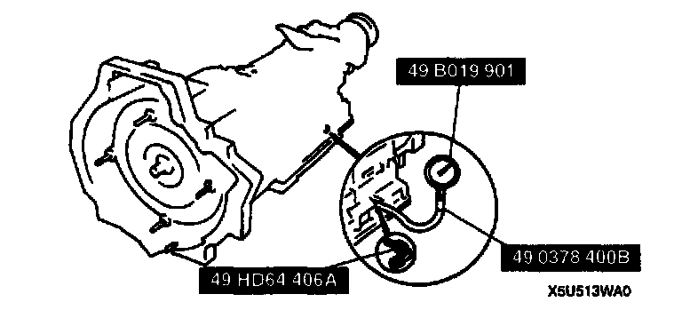
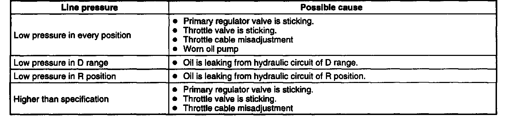
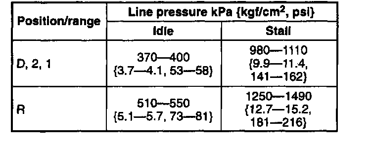
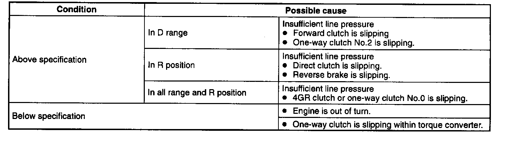
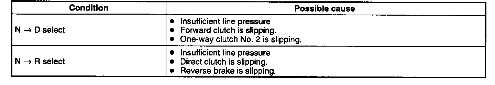

On Vehicle Inspection
MECHANICAL SYSTEM TESTMechanical System Test Preparation
1. Engage the parking brake and use wheel chocks at the front and rear of the wheels.
2. Inspect the engine coolant.
3. Inspect the engine oil.
4. Inspect the ATF levels.
5. Inspect the ignition timing.
6. Inspect the idle speed.
Line Pressure Test
1. Perform mechanical system test preparation.
Warning: Removing the plug when the ATF is hot can be dangerous. Hot ATF can come out of the opening and badly burn you. Before removing the plug, allow the ATF to cool.

2. Connect the SSTs to the line pressure inspection port.
3. Shift the selector lever to D range and read the line pressure at idle.
4. Connect the SST to the line pressure inspection port.

Evaluation Of Line Pressure Test
Caution: If the accelerator pedal is pressed for longer than 5 seconds while the brake pedal is pressed, the transmission could be damaged. Therefore, perform both steps 5 and 6 within 5 seconds.
5. Firmly depress the brake pedal with the left foot, and then gradually depress the accelerator pedal with the right.
6. When the engine no longer increases, quickly read the line pressure and release the accelerator pedal.
7. Shift the selector to N position and let the engine idle for 1 minute or more to cool the ATF.
8. Read the line pressure at idle and at the engine stall speed for the 2, 1 ranges, and R position in the same manner.

Specified Line Pressure
Warning: Removing the SST when the ATF is hot can be dangerous. Hot ATF can come out of the opening and badly burn you. Before removing the SST, allow the ATF to cool.
9. Remove the SSTs.
10. Apply ATF to the new O-ring.
11. Install the O-ring to the plug.
12. Install a plug in the inspection port.
Tightening torque 5.9 - 8.8 Nm (60 - 90 kgf-cm, 5.3 - 7.8 inch lbs.)
Stall Test
1. Perform mechanical system test preparation.
2. Shift the selector lever to R position.
Caution: If the accelerator pedal is pressed for longer than 5 seconds while the brake pedal is pressed, the transmission could be damaged. Therefore, perform both steps 3 and 4 within 5 seconds.
3. Firmly depress the brake pedal with the left foot, and gently depress the accelerator pedal with the right.
4. When the engine speed no longer increases, quickly read the speed and release the accelerator pedal.
5. Shift the selector to N position and let the engine idle for 1 minute or more to cool the ATF.
6. Perform a stall test of D, 2, and 1 ranges in the same manner.
Engine stall speed 2,370 - 2,740 rpm

Evaluation Of Stall Test
Time Lag Test
1. Perform mechanical system test preparation.
2. Shift the selector from N position to D range. (O/D OFF switch OFF)
3. Use a stopwatch to measure the time it takes from shifting until shock is felt. Make three measurements for each test and take the average from the results.
4. Perform the test for the following shifts in the same manner.
1) N position -> D range (O/D OFF SW ON)
2) N position -> R position
Time lag
N position -> D range: 0.7 sec
N position -> R position: 1.2 sec

Evaluation of time lag test